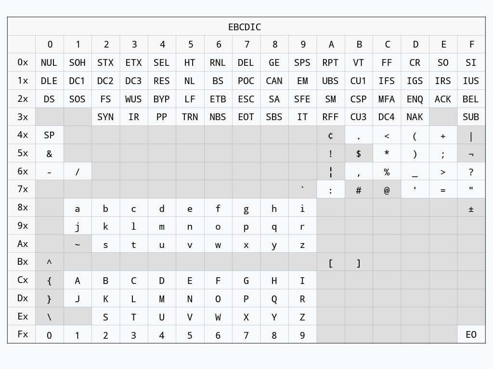
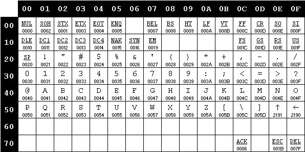
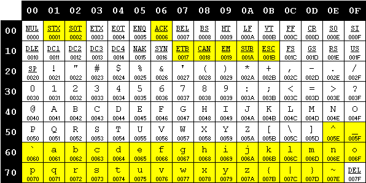
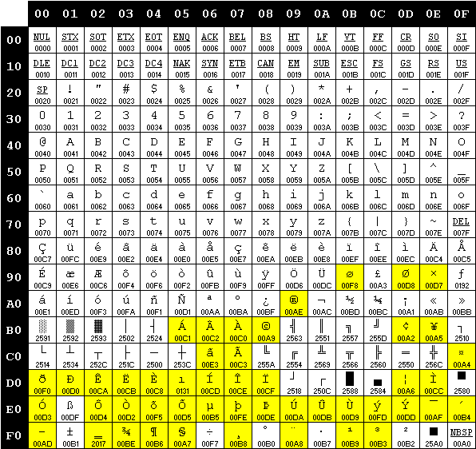
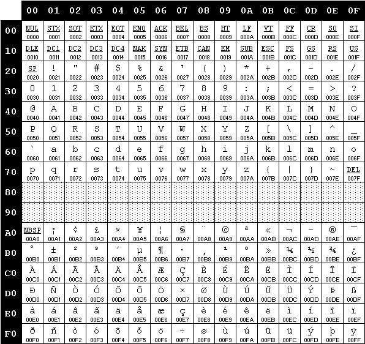
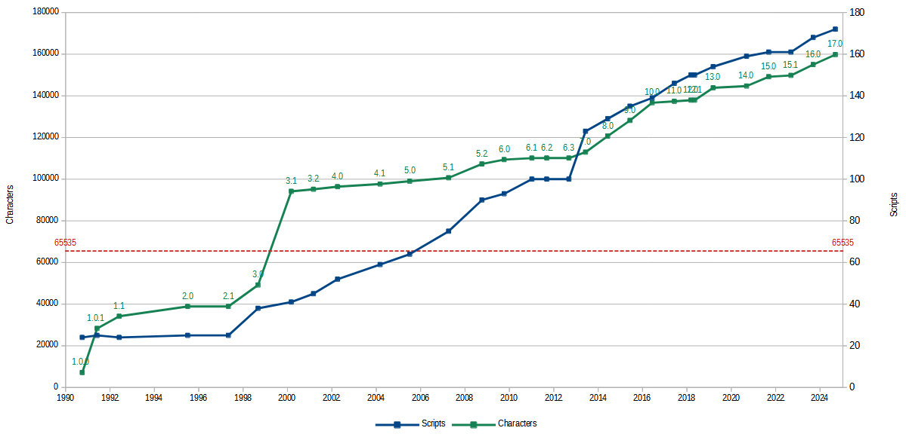

risorse | unicode
Il problema di rappresentare la scrittura nei calcolatori risale alle origini dell’informatica. La soluzione più frequentemente adottata è la definizione di una codifica di carattere che consiste nell’associare ad ogni simbolo dell’alfabeto in uso una particolare sequenza di bit. Questa associazione viene a volte erroneamente indicata col termine di set di caratteri, mappa dei caratteri, o code page.
Un tipico esempio di codifica, risalente al 1963 e ancora in uso in ambiente informatico, è lo standard ASCII – American Standard Code for Information Interchange.
La codifica ASCII nasce in IBM nel 1961 ad opera di Bob Bemer durante lo sviluppo della telescrivente Teletype Model 33. Non soddisfatto delle codifiche già in uso nell’azienda per cui lavora (ben nove, stando alle sue parole), ed in particolare della codifica EBCDIC – Extended Binary Coded Decimal Interchange Code – impiegata con successo nei mainframe e minicomputer prodotti fino a quel momento, presenta all’allora ANA – American Standards Association (ora ANSI – American National Standards Institute) una proposta per una nuova codifica dalle caratteristiche secondo lui più desiderabili: compattezza, netta separazione tra i caratteri di controllo e quelli grafici, lettere e cifre contigue e ordinate per semplificare l’ordinamento di sequenze alfanumeriche.
Codifica EBCDIC (fonte newton.com.tw).
Il comitato inizia un lavoro di sintesi della proposta di Bemer e delle codifiche più diffuse dell’epoca quali CCITT, ITA2 e FIELDATA, oltre alla già citata EBCDIC, che culmina, nei primi mesi del 1963, nella pubblicazione della prima versione dello standard ASCII. Si tratta di una codifica a 7 bit, preferita ad una a 8 per minimizzare i costi di trasmissione.
La versione iniziale della codifica ASCII.
La prima versione della codifica non contempla le lettere minuscole, che tuttavia vengono incluse pochi mesi dopo: la loro posizione è scelta in modo tale che la configurazione di bit associata ad una lettera minuscola differisce dalla corrispondente versione maisucola per il solo bit in posizione 6, semplificando notevolmente la procedura di trasformazione da maiuscolo a minuscolo di un testo e viceversa. Nel tempo alcuni caratteri di controllo vengono spostati, altri rinominati, altri ancora aggiunti. Il set di caratteri ASCII assume la sua forma definitiva nel 1967. Negli anni successivi lo standard subirà piccole modifiche atte a risolvere alcune ambiguità semantiche, l’ultima delle quali risale al 1986.
La versione attuale della codifica ASCII, in evidenza le differenze rispetto alla prima versione.
La codifica ASCII si diffonde molto rapidamente: diversi produttori di apparecchiature per l’elaborazione dati la scelgono in virtù della sua compattezza e ricchezza di codici di controllo. Ironicamente, una delle ultime aziende ad adottare questa codifica è proprio IBM, che decide di servirsene per il suo primo modello di PC nel 1981.
Come mai il carattere di controllo DEL si trova nell’angolo in basso a destra della tabella, ben lontano dal resto dei caratteri di controllo? La ragione è squisitamente fisica:
This code was originally used to mark deleted characters on punched tape, since any character could be changed to all 1s by punching holes everywhere. If a character was punched erroneously, punching out all seven bits caused this position to be ignored or deleted.[2][3] In hexadecimal, this is 7F to rub out 7 bits (FF to rubout 8 bits was used for 8-bit codes). This character could also be used as padding to slow down printing after newlines, though the all-zero NUL was more often used.
Fonte: wikipedia.org.

Un nastro perforato.
La componente base di una codifica è il set di caratteri, ovvero l’insieme dei simboli che si intende considerare. Il set di caratteri della codifica ASCII comprende tutte le lettere dell’alfabeto inglese, maiuscole e minuscole, le dieci cifre decimali, i simboli di interpunzione più altri simboli grafici, oltre ad alcuni caratteri di controllo, come ad esempio l’a-capo. L’altro aspetto che caratterizza una codifica è l’unità di codifica, ovvero l’unità atomica utilizzata per costruire le rappresentazioni dei caratteri; nel caso dell’ASCII consiste di un pacchetto di 7 bit. Poiché l’ASCII attribuisce ad ogni carattere un’unica unità di codifica, e che ad ogni unità atomica è associato un carattere distinto, l’alfabeto ASCII è composto esattamente da 128 caratteri, con codici che vanno da 0000000 (0) fino a 1111111 (127).
| Bit Mask | 6 | 0 | 0 | 0 | 0 | 1 | 1 | 1 | 1 | |||
| 5 | 0 | 0 | 1 | 1 | 0 | 0 | 1 | 1 | ||||
| 4 | 0 | 1 | 0 | 1 | 0 | 1 | 0 | 1 | ||||
| Col→ | 0 | 1 | 2 | 3 | 4 | 5 | 6 | 7 | ||||
| 3 | 2 | 1 | 0 | Row↓ | ||||||||
|---|---|---|---|---|---|---|---|---|---|---|---|---|
| 0 | 0 | 0 | 0 | 0 | NUL | DLE | SP | 0 | @ | P | ` | p |
| 0 | 0 | 0 | 1 | 1 | SOH | DC1 | ! | 1 | A | Q | a | q |
| 0 | 0 | 1 | 0 | 2 | STX | DC2 | " | 2 | B | R | b | r |
| 0 | 0 | 1 | 1 | 3 | ETX | DC3 | # | 3 | C | S | c | s |
| 0 | 1 | 0 | 0 | 4 | EOT | DC4 | $ | 4 | D | T | d | t |
| 0 | 1 | 0 | 1 | 5 | ENQ | NAK | % | 5 | E | U | e | u |
| 0 | 1 | 1 | 0 | 6 | ACK | SYN | & | 6 | F | V | f | v |
| 0 | 1 | 1 | 1 | 7 | BEL | ETB | ' | 7 | G | W | g | w |
| 1 | 0 | 0 | 0 | 8 | BS | CAN | ( | 8 | H | X | h | x |
| 1 | 0 | 0 | 1 | 9 | HT | EM | ) | 9 | I | Y | i | y |
| 1 | 0 | 1 | 0 | A | LF | SUB | * | : | J | Z | j | z |
| 1 | 0 | 1 | 1 | B | VT | ESC | + | ; | K | [ | k | { |
| 1 | 1 | 0 | 0 | C | FF | FS | , | < | L | \ | l | |
| 1 | 1 | 0 | 1 | D | CR | GS | - | = | M | ] | m | } |
| 1 | 1 | 1 | 0 | E | SO | RS | . | > | N | ^ | n | ~ |
| 1 | 1 | 1 | 1 | F | SI | US | / | ? | O | _ | o | DEL |
è immediato ricavare dalla tabella la configurazione di bit per la a maiuscola (carattere A):
A → col=4, row=1
↓ ↓
100 ↓
↓ 0001
↓ ↓
100 0001 = 41
bit: 654 3210
Poiché i computer dell’epoca erano basati su architetture a 8 bit, la memorizzazione di un carattere ASCII in un byte lasciava un bit inutilizzato. Diversi costruttori e sviluppatori di software utilizzarono il bit extra nei modi più disparati, per esempio per indicare un’enfasi – corsivo, grassetto, sottolineatura… –, per indicare il carattere finale di una parola, o per estendere la codifica, introducendo simboli non presenti nella codifica ASCII, come ad esempio le lettere accentate o quelle dell’alfabeto greco o simboli grafici adatti a realizzare semplici sinottici.
La prima codifica ASCII a 8 bit, denominata “Extended ASCII”, fu realizzata da IBM per il suo PC nel 1981. La successiva diffusione dei computer IBM-PC compatibili e la necessità di localizzare i software spinse verso la standardizzazione delle estensioni proprietarie del codice ASCII, introducendo il concetto di set di caratteri OEM – Original Equipment Manufacturer. La costante di questo tipo di codifiche è l’uso di unità di codifica di 8 bit: le prime 128 posizioni coincidono con quelle del codice ASCII, mentre le successive 128, dal codice 1000000 (128) al codice 11111111 (255), sono di volta in volta utilizzate per simboli diversi.
Una particolare mappatura prende il nome di code page, e ogni pagina è indicata da un identificativo numerico. Per esempio, la pagina contenente le lettere accentate è la numero 850, mentre quella dedicata all’alfabeto greco è la numero 737.

La code page 437 “United States”, l’originale del PC IBM (fonte: charset.org).
La code page 850 “Multilingual (Latin I)”, in evidenza le differenze rispetto alla 437 (fonte: archive.org).

La code page 737 “Greek II”, in evidenza le differenze rispetto alla 437 (fonte: archive.org).
Con l’avvento di Windows nel 1985 Microsoft introdusse delle nuove codifiche, sempre basate su code page. Per distinguerle da quelle OEM usate in ambiente DOS le denominò, piuttosto infelicemente, ANSI: di fatto, non esiste alcuno standard ANSI a riguardo. Microsoft scelse quel nome perché nel definire quelle codifiche si ispirò – piuttosto liberamente, in realtà – a una proposta di standard che però non fu mai presa in considerazione dal comitato ANSI, e che qualche anno più tardi sarebbe divenuto l’ISO-8859-1 (cfr. voce “ANSI” in[7]). La code page ANSI Windows-1252 e lo standard ISO-8859-1 (noto anche come “Latin 1” o “Western Europe”) differiscono tra loro per ben 27 associazioni[9].
La code page ISO-8859-1 (fonte: charset.org).

La code page Windows-1252, in evidenza le differenze rispetto all’ISO 8859-1 (fonte: charset.org).
Poiché tutte le codifiche basate su code page estendono quella ASCII, un flusso di testo ASCII è perfettamente decodificabile utilizzando una qualunque codifica estesa; viceversa, un testo contenente caratteri specifici di una particolare code page OEM o Windows può essere decodificato correttamente solo tramite la medesima code page. Questo può rappresentare un problema, se il testo viene decodificato su un sistema che usa una code page diversa da quello che l’ha codificato, un fenomeno denominato mojibake, letteramente “trasmutazione di caratteri”:
| c | a | f | f | è | |
| ↓ | ↓ | ↓ | ↓ | ↓ | CP 850 |
| 63 | 61 | 66 | 66 | 8A | |
| ↓ | ↓ | ↓ | ↓ | ↓ | CP 737 |
| c | a | f | f | Λ |
Esempio di mojibake dovuto all‘uso di una code page errata in fase di decodifica.
Una codifica basata su unità a 8 bit che rappresenta ogni carattere con un’unità può rappresentare al più 256 caratteri diversi. In alcuni ambiti questo limite è inaccettabile: le lingue asiatiche ne sono un esempio. Il problema viene normalmente risolto aumentando il numero di unità di codifica utilizzate per rappresentare un singolo carattere. Nel caso si scelga di utilizzare due unità di codifica per carattere (due byte), si parla di set di caratteri DBCS – Double-byte character set. In questo modo, il numero di caratteri rappresentabili sale a 65536. Alcune codifiche DBCS adottano particolari schemi di codifica mista, nelle quali alcuni caratteri vengono associati ad un’unica unità di codifica, altri a due: alla diminuzione del numero di simboli rappresentabili corrisponde però la possibilità di mantenere la compatibilità con la codifica ASCII per i caratteri che la prevedono. Queste codifiche non sono compatibili con quelle basate su code page, e ciò preclude la possibilità di scambiare informazioni testuali tra due sistemi che adottano due schemi diversi; spesso, anche questa situazione è inaccettabile.
Unicode, originariamente Unification Code, nasce negli Stati Uniti nella seconda metà degli anni ‘80 dallo sforzo congiunto di Xerox e Apple di definire un set di caratteri multi-lingua facilmente trattabile dai calcolatori, in particolare astraendo dalle code page e scegliendo un’unità di codifica a lunghezza fissa di 16 bit. I limiti di questa scelta si palesarono pochi anni più tardi, quando il processo di standardizzazione delle lingue orientali produsse un catalogo di decine di migliaia ideogrammi: un alfabeto troppo ampio per poter essere interamente rappresentato con una codifica a 16 bit.
Contemporaneamente in Europa nasceva lo standard ISO/IEC 10646, che introduceva una codifica a 32 bit nota come UCS – Universal (Coded) Character Set che, prevedendo delle sequenze di escape per attivare delle modalità di codifica differenti, rendeva praticamente infinito il numero di caratteri rappresentabili.
Oltre che per l‘estensione del set di caratteri coperto, le due codifiche si differenziavano anche per altri aspetti sostanziali:
Agli inizi degli anni ‘90 ebbe inizio un processo di unificazione delle due codifiche: già in Unicode 2.0 appaiono tre differenti codifiche binarie di chiara ispirazione ISO. Le attribuzioni dei codici della versione 6.1 di Unicode corrispondono perfettamente a quelle definite dallo standard ISO/IEC 10646:2012.
With over 30,000 unallocated character positions, the Unicode character encoding provides sufficient space for foreseeable future expansion.
Unicode è in continuo sviluppo:
Scritture e caratteri supportati da Unicode nel tempo.
Unicode conobbe un immediato successo, in particolare sul Web:

Diffusione di Unicode in Internet nei primi anni 2000 (fonte: googleblog.blogspot.com).
Ad ogni carattere Unicode assegna un code point, ovvero un valore numerico compreso tra 0 e 10FFFF cui viene applicato il prefisso U+ (il code point della lettera A maiuscola è U+0041). Non tutti i code point sono assegnati ad un carattere. La codifica è strutturata in piani, ognuno dei quali contiene 65536 caratteri. I piani definiti sono 16, e sono identificati dalle prime due cifre del codice esadecimale. I caratteri originali Unicode a 16 bit, i cui codici sono compresi tra 0 e 00FFFF, costituiscono il piano zero o BMP – Basic Multilingual Plan. I piani successivi sono detti piani estesi o piani surrogati. Se i caratteri del piano zero sono rappresentabili con 16 bit, quelli dei piani estesi necessitano di almeno 24 bit. Codificare caratteri con sequenze di lunghezza diversa può essere problematico, come già visto. D’altra parte, anche utilizzare più bit del necessario per rappresentare i caratteri ha i suoi svantaggi.
| Piano | Intervallo | Descrizione | Abbreviazione |
|---|---|---|---|
| 00 | 000000-00FFFF | Basic Multilingual Plane | BMP |
| 01 | 010000-01FFFF | Supplementary Multilingual Plane | SMP |
| 02 | 020000-02FFFF | Supplementary Ideographic Plane | SIP |
| 03 | 030000-03FFFF | Tertiary Ideographic Plane | TIP |
| 04-13 | 040000-0DFFFF | non assegnati | - |
| 14 | 0E0000-0EFFFF | Supplementary Special-purpose Plane | SSP |
| 15 | 0F0000-0FFFFF | Supplementary Private Use Area-A | - |
| 16 | 100000-10FFFF | Supplementary Private Use Area-B | - |
Il carattere in Unicode è un’entità astratta, indipendente dalla sua forma grafica (glifo); esso rappresenta un’unità di testo (grafeme). In quest’ottica, Unicode associa un code point alla descrizione di un carattere, senza entrare nel merito dell’aspetto (corsivo, grassetto, con o senza le grazie, …). Ad esempio, il code point U+0041 è associato al carattere LATIN CAPITAL LETTER A, ed è solo per motivi di praticità che nelle tabelle di codifica viene anche riportato un esempio di rappresentazione grafica del carattere.
In genere non c’è corrispondenza biunivoca tra grafemi e glifi: un unico grafeme può essere composto da più glifi (ad esempio la lettera e accentata può essere considerata come una composizione di due glifi, quello per la e e quello per l'accento), così come un glifo può rappresentare più grafemi (si pensi ad esempio alle legature). Per ragioni di compatibilità, anche la codifica Unicode non è biunivoca: un singolo carattere può essere identificato da sequenze di altri caratteri; si parla in questo caso di caratteri equivalenti. Esistono due tipi di equivalenze:
U+00E8 - LATIN SMALL LETTER E WITH GRAVE..........è U+0065 - LATIN SMALL LETTER E.....................e U+0300 - COMBINING GRAVE ACCENT...................̀ U+00E8 (è) ≡ U+0065 U+0300 (è)
Un caso di equivalenza canonica ternaria:
U+00C5 - LATIN CAPITAL LETTER A WITH RING ABOVE...Å U+0041 - LATIN CAPITAL LETTER A...................A U+030A - COMBINING RING ABOVE.....................̊ U+212B - ANGSTROM SIGN............................Å U+00C5 (Å) ≡ U+0041 U+030A (Å) ≡ U+212B (Å)
U+2460 CIRCLED DIGIT ONE..........................① U+0031 DIGIT ONE..................................1 U+2460 (①) ∼ U+0031 (1) U+2083 - SUBSCRIPT THREE..........................₃ U+0033 - DIGIT THREE..............................3 U+2083 (₃) ∼ U+0033 (3) U+FB01 - LATIN SMALL LIGATURE FI..................fi U+0066 - LATIN SMALL LETTER F.....................f U+0069 - LATIN SMALL LETTER I.....................i U+FB01 (fi) ∼ U+0066 U+0069 (fi)
Poiché uno stesso carattere può assumere codifiche differenti, nasce il problema di stabilire, dati due testi Unicode, se questi sono uguali. A tal scopo sono state definite delle regole di normalizzazione delle rappresentazioni dei testi Unicode – Unicode Normalization Forms[10] – che si occupano di trasformare i testi originali in una forma primitiva comune, a partire dalla quale risulta più semplice effettuare il confronto.
Se da una parte Unicode associa ad ogni carattere un codice univoco, dall’altra offre la possibilità di scegliere il formato di rappresentazione binaria dei codici (UTF – Unicode/UCS Transformation Format), variabile o fissa:
UTF-8: codifica multi-byte a lunghezza variabile con unità di codifica a 8 bit, ASCII-compatibile; rappresenta ogni carattere con un minimo di 1 ad un massimo di 4 byte. E’ una codifica stateless, ovvero gli errori di codifica di un carattere non si propagano ai successivi;
UTF-16: codifica multi-byte a lunghezza variabile con unità di codifica a 16 bit; ogni carattere è rappresentato con una sequenza di 2 o 4 byte. Esiste nelle varianti big endian (UTF-16BE) e little endian (UTF-16LE);
UTF-32: codifica multi-byte a lunghezza fissa con unità di codifica a 32 bit; ogni carattere è rappresentato con una sequenza di 4 byte. Esiste nelle varianti big endian (UTF-32BE) e little endian (UTF-32LE).
La tabella sottostante riporta il numero di byte necessario per rappresentare un code point nei vari formati:
| Intervallo | Caratteri contenuti | UTF-32 | UTF-16 | UTF-8 |
|---|---|---|---|---|
| 000000-00007F | Basic Latin | 4 | 2 | 1 |
| 000080-0007FF | Latin Extensions, Greek, Cyrillic, … | 4 | 2 | 2 |
| 000800-00FFFF | Thai, Hiragana, Katakana, … | 4 | 2 | 3 |
| 010000-10FFFF | Cuneiform, Hieroglyphs, Private, … | 4 | 4 | 4 |
Quando una sequenza di caratteri Unicode in formato UTF-16 o UTF-32 viene serializzata in un flusso di byte, per esempio un file, è necessario definire l’ordine di scrittura dei byte che costituiscono le singole unità di codifica. La rappresentazione UTF-16 della lettera A maiuscola, 0041, può ad esempio essere serializzata in due modi distinti: 00–41 oppure 41–00. La prima forma, presentando prima il byte più significativo seguito da quello meno significativo, viene detta big endian; la seconda forma, nella quale il byte meno significativo precede quello più significativo, viene denominata little endian. L’endianness indica quindi il “peso” del primo byte che si incontra.
La codifica UTF-16 fa uso di alcuni speciali code point del Basic Multilingual Plan, denominati surrogati, per indirizzare i caratteri al di fuori del BMP stesso. I surrogati sono 2048 code point che non corrispondono a nessun carattere, e si suddividono in surrogati alti, i cui codici vanno da U+D800 fino a U+DBFF, e surrogati bassi, da U+DC00 a U+DFFF. I surrogati appaiono sempre in coppia, nell’ordine alto/basso.
La coppia di surrogati viene determinata sottraendo 10000 dal code point del carattere così da normalizzarlo nell’intervallo [0, FFFFF]; i venti bit rimanenti vengono equamente distribuiti nei dieci bit meno significativi del surrogato alto (D800÷DBFF ↔ 110110xxxxxxxxxx) e quello basso (DC00÷DFFF ↔ 110111xxxxxxxxxx):
U+1D54A - MATHEMATICAL DOUBLE-STRUCK CAPITAL S....𝕊
1D54A → 0001 1101 0101 0100 1010 -
0001 0000 0000 0000 0000
========================
0000 1101 0101 0100 1010
↓ ↓
0000110101 0101001010
↓ ↓
110110xxxxxxxxxx ↓
↓ ↓
1101100000110101 ↓
↓ ↓
D835 ↓
110111xxxxxxxxxx
↓
1101110101001010
↓
DD4A
U+1D54A → D835 DD4A
La codifica UTF-8 distribuisce i bit di un code point in una sequenza di byte secondo lo schema seguente:
| Intervallo | Bits | Maschera |
|---|---|---|
| 000000-00007F | 7 | 0xxxxxxx |
| 000080-0007FF | 11 | 110xxxxx 10xxxxxx |
| 000800-00FFFF | 16 | 1110xxxx 10xxxxxx 10xxxxxx |
| 010000-10FFFF | 21 | 11110xxx 10xxxxxx 10xxxxxx 10xxxxxx |
La configurazione dei bit più significativi dei byte costituenti di una codifica UTF-8 assumono dunque un significato ben preciso:
| Bits | Significato |
|---|---|
| 0xxxxxxx | Byte iniziale di una sequenza di lunghezza 1 (ASCII) |
| 10xxxxxx | Byte successivo al primo |
| 110xxxxx | Byte iniziale di una sequenza di lunghezza 2 |
| 1110xxxx | Byte iniziale di una sequenza di lunghezza 3 |
| 11110xxx | Byte iniziale di una sequenza di lunghezza 4 |
Segue un esempio di codifica UTF-8:
U+2135 - ALEF SYMBOL..............................ℵ
2135 → 0010 0001 0011 0101
0010 0001 0011 0101 → 0010 000100 110101
↓ ↓ ↓
1110xxxx 10xxxxxx 10xxxxxx
↓ ↓ ↓
11100010 10000100 10110101
↓ ↓ ↓
E2 84 B5
U+2135 → E2 84 B5
Anche l’ISO/IEC 10646 specifica delle forme di codifica:
UCS-4: “Universal Character Set coded in 4 octets”, equivale a UTF-32, ed è la forma canonica di rappresentazione dei caratteri;
UCS-2: “Universal Character Set coded in 2 octets”, noto anche come “the two-octet BMP form”, rappresenta i soli caratteri del piano zero, ovvero quei caratteri rappresentabili con un’unica unità di 32 bit. In questo contesto, è compatibile con UTF-16. E’ stato dichiarato obsoleto nel 2011.
Il BOM – Byte order mark è il carattere Unicode U+FEFF quando utilizzato per specificare l’endianness di una sequenza di caratteri Unicode. Tale carattere, denominato “zero width no-break space”, può occupare solo la prima posizione di una sequenza di caratteri Unicode e non ha altro effetto che quello di fornire un’indicazione indiretta del tipo di ordinamento in uso — perdendo quindi il significato originale di “zero width no-break space”.
Nota: il vincolo di poter apparire solo in prima posizione è stato introdotto nella versione 3.2 di Unicode. Non è quindi escluso che si possa trovare anche in posizioni intermedie, dove di nuovo assume il significato di “zero width no-break space”. In questo contesto andrebbe sostituito dal carattere U+2060 “word joiner”.
| Codifica | Endianness | BOM ammesso? |
|---|---|---|
| UTF-8 | n/a | sì |
| UTF-16 | ? | sì |
| UTF-16BE | big | no |
| UTF-16LE | little | no |
| UTF-32 | ? | sì |
| UTF-32BE | big | no |
| UTF-32LE | little | no |
Utilizzando unità di codifica a 8 byte, in linea di principio la presenza del BOM è superflua; alcuni software tuttavia la potrebbero richiedere. Il BOM in UTF-8 è rappresentato dalla sequenza EF BB BF.
Se durante la decodifica di un flusso Unicode la prima coppia di byte incontrata è FE FF, si può presupporre che si tratti del BOM di una sequenza big endian. Se invece si trova FF FE, essendo il code point U+FFFE non valido, si può presupporre che si tratti del BOM di una sequenza little endian. In genere, se un flusso binario inizia con la sequenza FF FE o FE FF si può ragionevolmente presupporre che si tratti di testo Unicode UTF-16.
Valgono le stesse considerazioni fatte per l’UTF-16.
Per la stragrande maggioranza dei caratteri Unicode la trasformazione da maiuscolo a minuscolo (e viceversa) comporta la sosituzione di un code point con un altro. Questi casi sono definiti “simple case mappings” e le corrispondenze sono elencate nello standard. Esistono tuttavia dei casi in cui la trasformazione richiede particolari attenzioni: questi vanno sotto il nome di “special case mappings” e sono definiti in un documento apposito. Segue qualche esempio.
la “s tedesca”:
U+00DF ↔ U+0053 U+0053 U+00DF - LATIN SMALL LETTER SHARP S..............ß U+0053 - LATIN CAPITAL LETTER S..................S ß ↔ SS
le legature:
U+00DF ↔ U+0046 U+0049 U+FB01 - LATIN SMALL LIGATURE FI.................fi U+0046 - LATIN CAPITAL LETTER F..................F U+0049 - LATIN CAPITAL LETTER I..................I fi ↔ FI
caratteri privi del corrispettivo maiuscol/minuscolo:
U+1E97 ↔ U+0054 U+0308 U+1E97 - LATIN SMALL LETTER T WITH DIAERESIS.....ẗ U+0054 - LATIN CAPITAL LETTER T..................T U+0308 - COMBINING DIAERESIS.....................◌̈ ẗ ↔ T◌̈
Sigma in coda:
U+03C2 ↔ U+03A3 U+03C3 ↔ U+03A3 U+03C2 - GREEK SMALL LETTER FINAL SIGMA..........ς U+03C3 - GREEK SMALL LETTER SIGMA................σ U+03A3 - GREEK CAPITAL LETTER SIGMA..............Σ ς ↔ Σ (for final sigma) σ ↔ Σ (for non-final sigma)
Lettera i minuscola in turco:
U+0069 ↔ U+0049 U+0069 ↔ U+0130 [tr] U+0069 - LATIN SMALL LETTER I....................i U+0049 - LATIN CAPITAL LETTER I..................I U+0130 - LATIN CAPITAL LETTER I WITH DOT ABOVE...İ i ↔ I i ↔ İ (in Turkish)
Ancora oggi ci si può imbattere nel mojibake, tipicamente su un Windows quando un testo codificato UTF-8 viene visualizzato utilizzando la code page ANSI attiva in quel momento. Per esempio, la parola caffè, che corrisponde alla sequenza di code point Unicode:
caffè → U+0063 U+0061 U+0066 U+0066 U+00E8
se codificata in UTF-8 origina la sequenza di byte:
caffè → 63 61 66 66 C3 A8
Questa stessa sequenza, se decodificata utilizzando la code page Windows-1252, dà luogo alla “parola”:
63 61 66 66 C3 A8 → caffè
Viceversa, la codifica secondo la code page Windows-1252 della parola originale corrisponde a:
caffè → 63 61 66 E8
che decodificata in UTF-8 produce:
63 61 66 E8 → caff�
Il carattere � (“replacement character”, code point U+FFFD) è il simbolo convenzionalmente utilizzato da Unicode per segnalare la presenza di un code point sconosciuto o non rappresentabile.
In Python 3.x, la cui conformità a Unicode è rimarchevole, accade questo (font permettendo):
>>> int("৪୨")
42
La risposta risulta meno sorprendente se si considera l’espressione seguente, equivalente alla prima:
>>> int("\u09ea\u0b68")
42
La consultazione delle tabelle Unicode risolve il mistero:
U+09EA - BENGALI DIGIT FOUR.......................৪ U+0B68 - ORIYA DIGIT TWO..........................୨
Aggiornamento [28/05/2014]
Al C++Now 2014 c’è stato un intervento di James McNellis intitolato “Unicode in C++”; le slide che ha preparato sono splendide, tanto che ne ho fatto una copia locale per non rischiare di perderle!
Pagina modificata il 08/11/2025